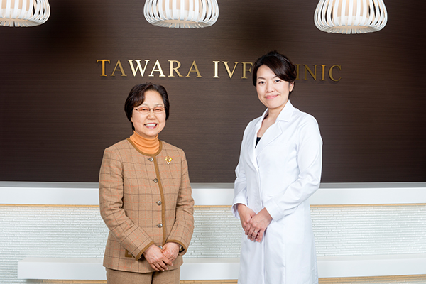
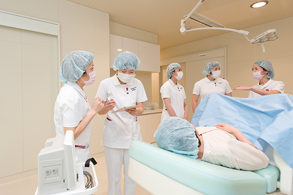

ホーム > 高い専門性と人間力 良質な医療で静岡を支える
高い専門性と人間力 良質な医で静岡を支える
高い専門性と人間力 良質な医で静岡を支える

常葉大学健康科学部 影山セツ子学部長と俵院長の「地域と医療と教育」をテーマにした対談記事が掲載されました。その際に、当院を学生さんに見学･実習していただきました。
静岡新聞掲載記事 (PDF形式：5Mb)
常葉大学学生さん 見学･実習アンケート

常葉大学学生さん3名に施設･設備･当院の見学を通じて感じた事など、当院を見学した感想を頂きました。
常葉大学学生 A･Iさんの感想
| 看護師を目指す理由 | 高校1年の夏、1日ナース体験に参加した際に患者さんと関わり、様々な体験をさせてもらったり、看護師の仕事を見学させていただりして、やりがいやあこがれを感じ、私も患者さんの思いに寄り添える優しい看護師になりたいと思ったことがきっかけです。看護学生になって母性実習を行い分娩の見学や産褥・新生児ケアを経験し、新しい命が生まれる感動や生命の尊さを肌で感じました。 |
|---|---|
| 採血室について | 採血時の周りの環境は無駄なものがなく、とても落ち着いた雰囲気で、検査に来る方もリラックスできる環境が整っていると感じました。患者さんを呼ぶときは、名前を周りの人にも聞こえるように名前で呼ぶのではなく、PHSを鳴らして呼ぶというプライバシーに配慮されていて、周りの目を気にせず安心して通院できると思いました。 |
| ナースステーション | 俵クリニックでの看護師の技術面での仕事は、主に採血や点滴、血圧測定、薬の管理などがあり、多いときは1日100人以上の方が受診するようなので、基礎的な技術の応用力が必要だと思いました。看護師の中にアロマインストラクターの資格を持った方がいらしてナースステーションにはアロマがたいてあったり、ゆったりとした音楽が流れていて、リラックスして働ける環境が整っていると思いました。 |
| エコー室･バックヤード | 内診台で横になったまま患者さんもモニターを見られるようになっていて、状況を自分の目でしっかりと見た上で、医療者と患者さんが共に治療を進めていくという環境が整っていると思いました。バックヤードも不要なものはなく、働きやすい環境にあると思いました。 |
| カウンセリングルーム | ソファーが置いてあったり、黄色やクリーム色のふんわりとした優しい照明があったりなど、とても落ち着いて安心できる雰囲気だと思いました。診察の時間だけでは十分に相談できない患者さんのために、親身になってそれぞれ患者さんの悩みを相談･説明してくれるのもとても安心できるのではないかと思いました。 |
| ラボ | 採卵でとれた卵子を2人の培養士で確認することで、より信頼性の高いものになると思いました。受精卵を15分間隔で撮影するカメラがあったり、子宮内の環境に近いように卵子を保存したりなど、不妊治療の最先端の環境が整えられていると思いました。ラボに入るまで何重もの扉になっていて、セキュリティにも気を付けているのがよく分かりました。 |
| IVFルーム | IVFルームとLABOは小さな窓でつながっていて、採卵したらすぐに運べる環境が整っていました。子宮内の環境に近づけて、卵子に異常が起こらないように、他部署との素早い連携が必要だと思いました。一般の病院の手術室とは異なり、ゆったりとした空間になっていたので、患者さんも不安や緊張が軽減し、安心して採卵や胚移植が受けられると思いました。 |
| 見学を通じての感想 | 見学させていただくまでは不妊治療の現場や実態について分からない部分が多くありました。しかし見学を通じて、こちらでの不妊治療は最先端の技術を使い、不妊症で悩んでいる方々に対して、一人一人に合った治療や相談･ケアを行っていることを学びました。また、こちらのクリニックは完全予約制で多いときは1日80〜100人程の方が診察に来られ、20〜40代の幅広い年齢の患者さんが通院していると聞いて、以前から不妊で悩んでいる方が多いのは知っていたけれど、不妊で悩み、子供を授かりたいと思っている方が多いことを改めて感じました。そのような中、不妊治療を専門に行うクリニックは必要不可欠だと思いました。不妊の方はなかなか人に相談できない中、ここでは診察時間以外にもカウンセリングを設け、看護師と一対一で相談できる時間を作り、患者さん一人一人に合った治療(タイミング療法、体質改善、ART治療など)を考え、患者さんが納得して治療を受けられる環境が整っていると思いました。 |
常葉大学学生 S･Yさんの感想
| 看護師を目指す理由 | 看護師は病気で苦しむ人の身体だけでなく心にもケアを行い、病院から日常に戻るまでの手助けをすることができ、やりがいがあると思います。看護師に憧れもあり、命に向き合う尊い仕事に就きたいと思ったからです。 |
|---|---|
| 採血室について | 患者さんもPHSを持っており、PHSで呼ぶことでプライバシーの配慮がなされていて驚きました。 |
| ナースステーション | とても清潔感があり、クリニックにもかかわらず大きな病院のようなナースステーションで驚きました。 |
| エコー室･バックヤード | 内診は患者さんへの羞恥心に配慮した声かけを行うことで安心感が増すように感じられました。PHSの活用はエコー室でも重要であるように感じました。 |
| カウンセリングルーム | 妊娠を望む夫婦の気持ちを聞いたり、治療や検査の説明をする際に医師と十分に話して今後の方針を決定することが大切だと思いました。患者さんには疑問や不安も多く、それを一つひとつ解決していくことも命を生み出すという大きな目標の前には必要なことだち感じました。 |
| ラボ | 受精卵が成長していくところを見て、こんなに小さい卵が人間になるんだと感動しました。医療の発展の凄さに直面しました。2人で卵子をチェックすることでミスを防ぐことも重要となるので厳密な管理がされていると感じました。 |
| IVFルーム | 手術室というだけで緊張や不安が大きいと思うのですが、その際の看護師の声かけが大切であると感じました。明るすぎない照度で、患者さんが、より安心できる配慮がなされていると思いました。 |
| 見学を通じての感想 | 患者さんにとっての不安を少しでも減らしておくことが看護師の役割であると感じました。不妊治療は、これまでお子様が出来なかったご夫婦にとって希望であり、多くの人の助けになると分かりました。 |
常葉大学学生 S･Sさんの感想
| 看護師を目指す理由 | 中学生のころから将来は看護師になろうと考えていました。小さい頃から注射が苦手で泣いていた私を壁に貼ってあるアンパンマンで気を紛らわせ、あっという間に採血をした看護師さんに感動し、すごいと思ったことを覚えています。 |
|---|---|
| 採血室について | 採血室の隣に検査室があり、すぐに検査できるような環境が印象的でした。また、席と席の間に板があり、プライバシーの保護にも十分に配慮されていると感じました。 |
| ナースステーション | ナースステーションが病院の病棟と同じように設備されていることに驚きました。大きい病院の病棟にいるような錯覚を覚えました。ナースステーションは整理･整頓されていてアロマも焚かれ、落ち着いて仕事ができる環境が整えられていると思いました。看護師さんや他の職種の方が楽しそうにお話ししている様子も見られ、私たち学生にも挨拶を返してくださったり気軽に話しかけてくださったり、雰囲気がとてもいいなと感じました。 |
| エコー室･バックヤード | エコー室が4部屋あり、それぞれの部屋にエコーが設置されていて、壁に設置されたモニターで患者さんも一緒にエコーの画像を見ることができ、子宮の状態や妊娠の経過などを具体的に知ることができると思いました。エコーを見るためもあり、部屋全体の明るさが抑えられていて、あまり周囲の目を感じさせず、落ち着いて内診に挑めるような環境の工夫も大事だと改めて感じました。 |
| カウンセリングルーム | 治療内容の説明や、患者さん一人ひとりの悩みなども聞くとのことで、専門知識はもちろん色々な悩みを抱えて通院している患者さんに合わせて答えるための技術も必要になると思いました。患者さんが座る席はゆとりのある2人掛けのソファーが置いてあり、ご夫婦で来られる方もいらっしゃるんだと感じました。 |
| ラボ | 卵子を見つける際に顕微鏡を通して探す作業は気が遠くなりそうだと感じました。胚などの取り違えがないようにダブルチェックをして厳重に保管されていて、命を預かることの重大さが伝わってきました。この施設の要となる部屋だと感じました。実際に顕微授精をする様子は、繊細さが求められ私には到底できそうにないと感じました。受精卵が分裂している過程を観察できる機器があるなど、最先端の機器が揃っている様子に感動しました。 |
| IVFルーム | 採卵された胚は、隣接するラボにすぐ移すことで、清潔を保ったまま運ぶことができるように感じました。IVFルームにいる患者さんとラボで、間違いがないように必ず患者さんの名前と採卵された胚の確認も徹底されていました。また、IVFルームのエコー画像も壁に設置してあるモニターで患者さんも見ることができ、実際の様子も自分で確認しながら受けられ、安心に繋がるように思いました。また、必ず看護師が患者さんの側で声かけをしたり、全身状態を確認したりしていて、少しでも安心して治療を受けるられるようにサポートすることが大切であると感じました。 |
| 見学を通じての感想 | 見学前は不妊治療の現場がどのようなものか想像がつかなったのですが、PHSを用いてプライバシーに配慮しながら入室時の患者さんの誤認チェックもしっかりと行っていて、妊娠を望む多くの患者さんを全力でサポートしている様子が感じられました。色々な悩みを抱えて受診している患者さんに対して、他の人に相談しにくい内容をカウンセリングルームなどで傾聴し気持ちを寄り添わせることで患者さんの不安を軽減したり、看護師だからこそできるアドバイスをすることが看護師の役割の一つであると感じました。これらは簡単ではないけれど、少しずつ患者さんとの信頼関係を築くことは重要だと思いました。そして卒業までサポートできるように、クリニックの様々な医療従事者全員が連携していることが分かりました。静岡の不妊治療の最前線であるこちらのクリニックの見学に参加して、以前より不妊治療への関心がもてるようになりました。 |
 ページの先頭へ
ページの先頭へ